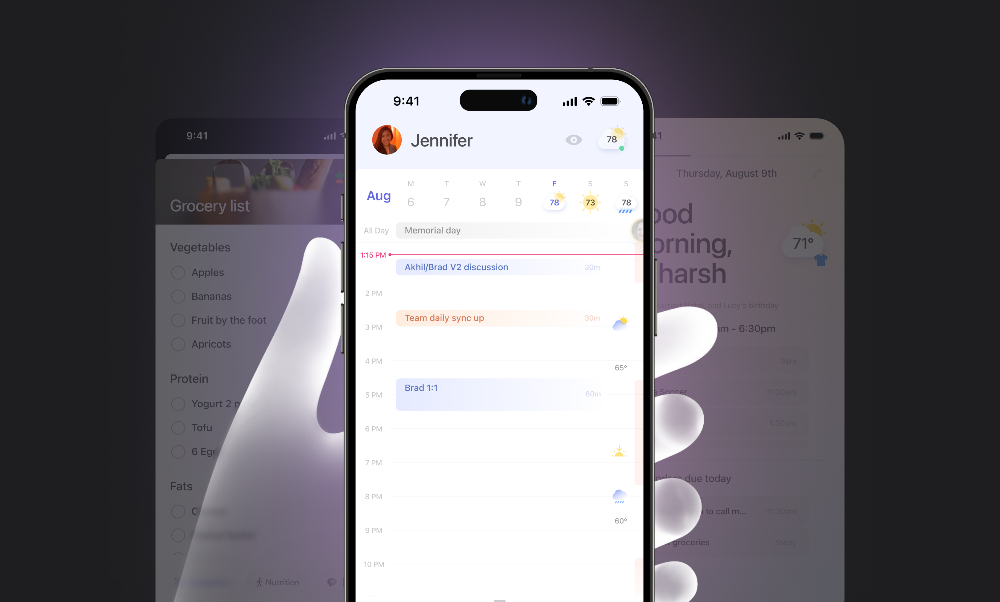
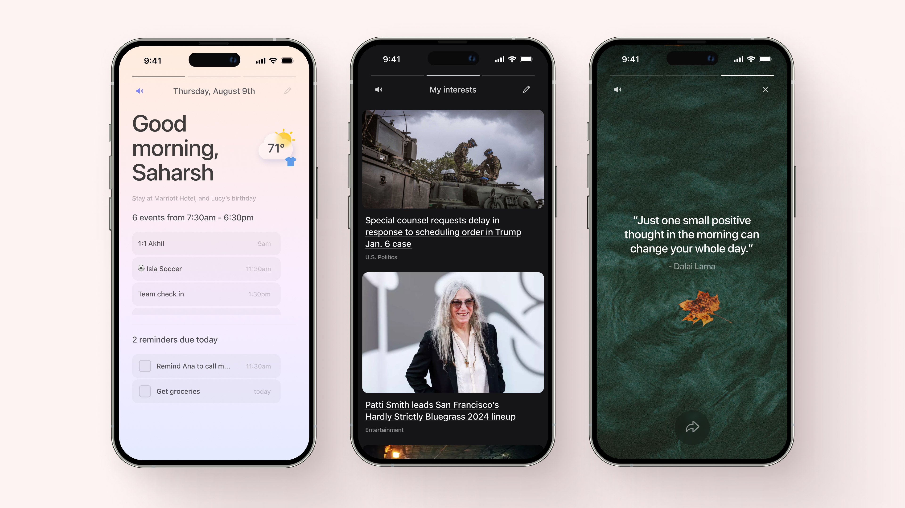
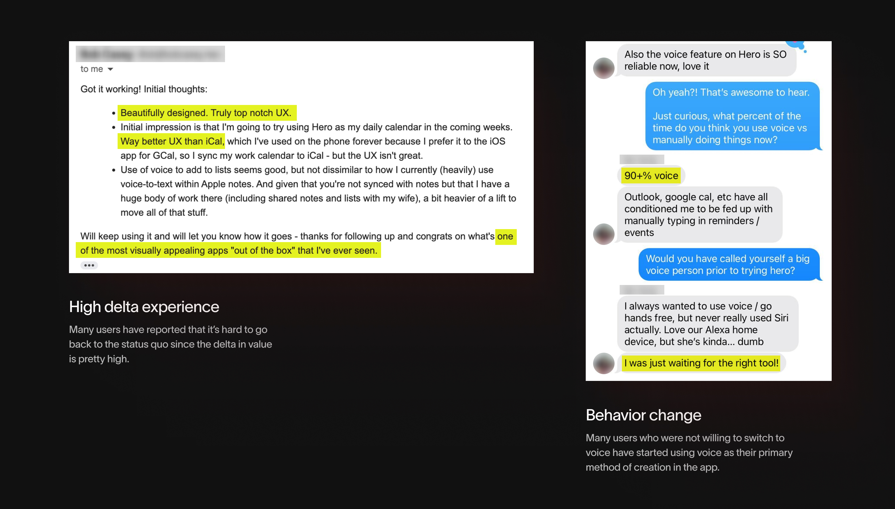

Every day, we juggle priorities across apps and people. Hero, the world’s first Daily Assistant, makes life easier in 3 ways:
Unified Life View: Hero combines calendars, reminders, notes, groceries, weather, news, search and GPT for a seamless overview.
Multi-player: Hero allows sharing availability, reminders, and notes with partners, family, and friends. Comment directly on items to keep context.
Voice-powered: Hero’s voice UX updates the UI as you speak, helping you complete tasks like scheduling events up to 10X faster.
Users use Hero as a ‘superpower’ for their busy lives.
I worked as the Founding Designer with 7 engineers over a period of 18 months (and continuing).
Designed the entire iOS product + brand experience, contributed to product strategy+hiring, and built a robust design culture in the team.
When I joined the team in May '23 as employee #1 in the US, the founders had already tested a crude MVP that laid the foundation of the app: All in one, voice-powered input for faster actions, and social.
My task on day 1 was to help the team build upon this foundation, and design an all new app from scratch, robust and scalable, over the next year. The team also had strong opinions about what what be required to build a true super-app. We also decided on core design principles to guide the decision-making.


One of the core decisions we made as a team early on was to get rid of any tabs/navigation and build a free-flowing feed of blocks. The core premise was to lay a foundation at first then use integrations to seamlessly integrate features over time, resulting in less and less UI for every use case. What we did NOT want to do was introduce a new tab every time we introduced a new feature.
Key considerations: Swipe threshold velocity, snapping vs stacking cards, scroll within scroll, and expansion/collapse logic.
White building and putting together the core feed-pieces, there was a need for some standardization. It was too early to build a UI-component library but I created a color system that had 2 key aspects:
• Fewer choices for easy decision making
• A robust auto-switch logic within each color to work on dark mode.

The app is meant to be a daily use-case and hence calendar is the anchor element of the app. We look at calendar as a surface within which we can bring in seamless integrations to help plan your day more easily. Along with scheduling events, users can see weather, others' availability & reminders in a simple, easily consumable interface.


What differentiates Hero Reminders from other reminder apps is again, the power of integrations. We empower users to remind their family/friends while also providing features such as 'comments' to add more context and schedule something recurring if needed. Reminders is one of the most loved features in Hero.

The goal with Hero Notes is to not compete with conventional note-taking apps. The core idea is to enable users get things off of their mind instantly and collaborate with your family/friends. Other than that, we wanted to really optimize for specific notes use cases, such as grocery list making. That led us to integrate Instacart API & auto-categorization. We also have a Perplexity integration within notes to save any answer as a note. Each note is accompanied by a genAI cover image.

Voice is the most powerful aspect in Hero by far. Users are able to finish certain actions upto 10x faster using voice (e.g. event scheduling).
Initial approach: We design an interface that allowed for seamless switching between voice and manual editing. The system also acted as a guided-language interface, prompting users what they need to do next. Although functioning, the feature was greatly limited by what all it helps the users achieve.


Daily Briefing is a great example of a feature that showcases the power of all the integrations we built over-time. With daily briefing, users can listen to their upcoming day's schedule, weather update, interests in news, and some daily motivation. The experience audio based and is accompanied by a soothing morning music & smooth animations that feels calming.

Onboarding was a tough nut to crack. The primary reason for the challenge is the fact that Hero is almost a new category of an app. Educating users about the features & interface without being too long/complicated seemed hard. We did some ruthless prioritization, took a ton of user feedback, & focused only on 2-3 key features (out of the 10+ we could have shown). Onboarding is the most iterated upon feature by far. **By the time you read this, we may have a completely new onboarding in place.**
We made it visually exciting & added animations, even when it meant slightly going out of the Hero design identity.

For ages, motion design/animations in software design have been referred to as the 'delighters'. There is a lot of truth to it and we created a lot of animations within the app with the same intent. But we also leveraged motion design to educate, guide, provide feedback, personalize, speed up shipping, etc.
Rive recently published a case-study (attached below) talking about how Hero utilizes animation to fast-track product developent.
We have prioritized user-feedback at every stage of the process. We talked with ~150 users 1-on-1 during our initial beta testing phase. But we've also tried to balance strong product thinking and intuition with the feedback to move fast. Not every decision is driven by user feedback, especially when we're trying to create a new category.
Just within 2 months of launch, retention on Hero is equivalent to the top 10% of productivity mobile apps with a d-30 retention of ~20%.
The #1 feedback from the users is always regarding the clean and simple interface (there's still a long way to go) but we're approaching PMF from 2 lenses (explained below):
• Behavior change
• High delta experience

A lot of disorganization comes with being a fast-paced, lean team. I helped create formal feedback and hand-off processes in the team to manage some of it.
I had to build a lot of things outside my core-competencies, so there was always a feeling of shipping imperfect things. Feedback from users and team helped but the feeling didn’t really go away.
Since the app-category is so new, things change everyday. Context switching is hard and there is not much scope to define systems with such changes.
Being the only designer in the company, I had to sometimes fight hard for some things that are subjective design-wise. The plus side is, I developed great thoroughness and open-mindedness.
What makes the team so fast and efficient at early stages is the messiness and lack of rigid structures. This isn’t really scalable but works wonders early in the process.
Taking feedback and considering unconventional ideas has become one of my superpower. Sometimes being in a closed design ecosystem for a long time hinders unconventional design thinking.